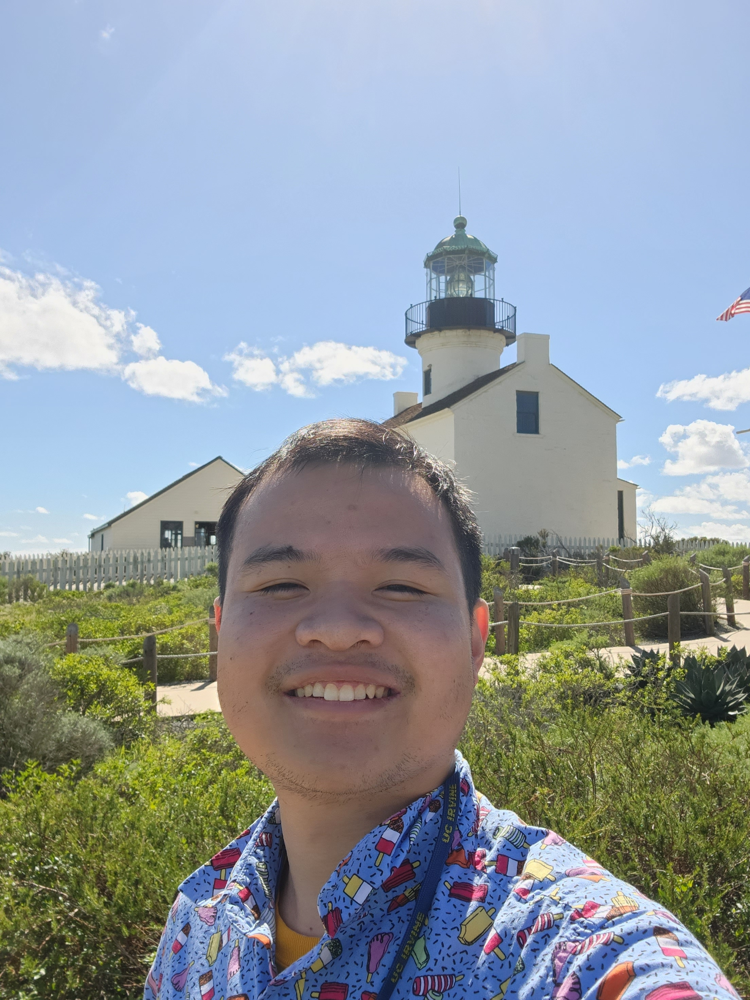
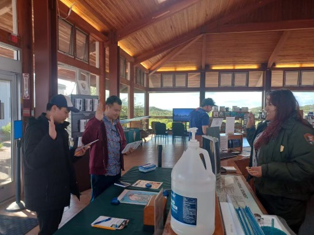
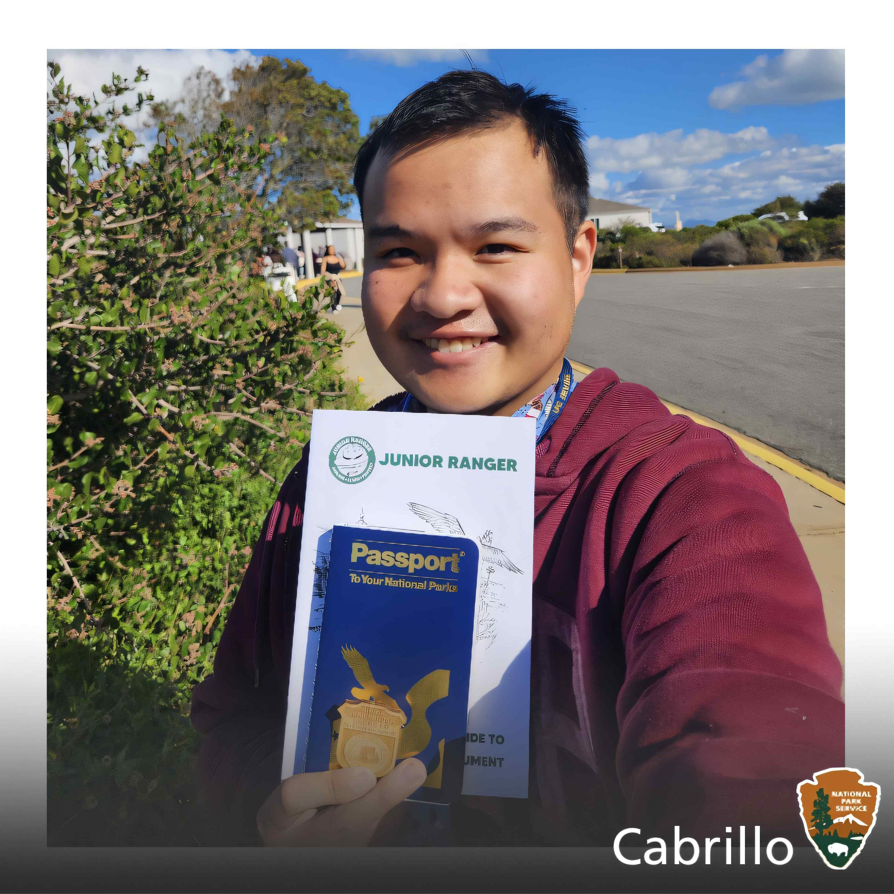

{kind=link}


Give me a one paragraph description of Cabrillo National Monument.
Cabrillo National Monument, located at the southern tip of the Point Loma Peninsula in San Diego, California, stands as a tribute to Juan Rodriguez Cabrillo's historic landing in 1542, marking the first European exploration of the western coastline of what is now the United States. Overlooking the Pacific Ocean, the monument offers stunning panoramic views of San Diego Bay, downtown San Diego, and the surrounding coastline. Visitors can explore the Old Point Loma Lighthouse, built in 1855, and learn about the region's maritime history through exhibits and interpretive programs. The park also features coastal tide pools teeming with marine life, hiking trails, and opportunities for whale watching, making it a captivating destination that combines natural beauty with rich historical significance.
I like Carbillo National Park because of its relationship with bringing missions to California. I really like the viewpoints where I get to look at some whales. The lighthouse is also interesting because you get to see the entire coast in solemity. If I come visit again, I would like to go on some of the more scenic isolate trails. The ranger were pretty chill people on getting me started with my whole Junior Ranger journey! I also got the passport here as well and initiated collecting passport cancellations here.
To be Uploaded

